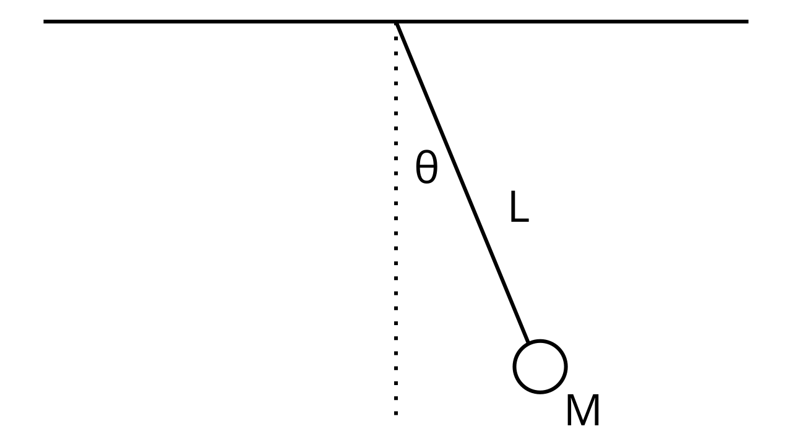
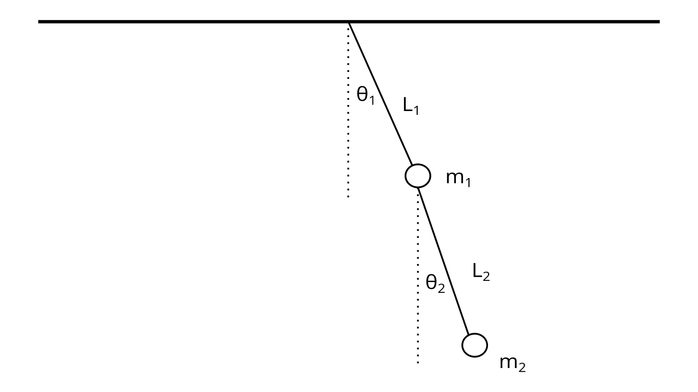

Classical mechanics, Part 2#
Newton’s laws and conservation of energy are two approaches to solving for the equations of motion of an object. We can make Newtonian mechanics more elegant by extending them to fields and potentials. But ultimately, Newtonian mechanics is still cumbersome to use. Here is an alternate, more beautiful approach - Lagrangian mechanics.
Lagrangian Mechanics#
The Lagrangian is the difference of an object’s kinetic and potential energies, and is denoted by:
Note that the dots are used for the time derivatives - that is, \(\dot x = \frac{dx}{dt}\).
The action is the time integral of the Lagrangian:
The principle of stationary action is one of the most fundamental and profound laws of physics, and states that for any given system, the action is stationary. What does stationary mean? Recall the idea of stationary points in calculus - which include minima and maxima. For the action to be stationary, that means the Lagrangian must be a stationary function, which are analogous to stationary points, just for the action, which is a function of functions.
But what form does that Lagrangian have to take to obey the principle of stationary action? The short answer is that it must obey the following equation, known as the Euler-Lagrange equation:
We will derive this differential equation in the following section - if this section is too math-heavy, feel free to skip this section.
To begin our derivation, we first go back to single-variable calculus, where we are often told to find the stationary points - such as the maxima or minima - of a function. Both maxima and minima are called stationary points - points where the derivative of a function is zero. But what exactly defines a stationary point? Let’s take a step back first. We know that the derivative is defined as the limit as \(\epsilon \to 0\) of:
We can rearrange that equation to form:
For a point to be stationary, we know that \(f'(x)\) must be zero. Thus:
which means that at a stationary point, the function remains the same so long as you remain within a small distance \(\epsilon\) away from the point. We denote a new notation, \(\delta\), which we call the variation, and which we define as:
Normally, since \(f(x + \epsilon) = f(x) + \epsilon f'(x)\), it would be true that:
But because \(f(x + \epsilon) = f(x)\) at a stationary point, \(f(x + \epsilon) - f(x) = 0\), so at any stationary point, it is true that:
Note
\(\delta f = \epsilon f'(x)\) is still true at a stationary point, but since \(f'(x) = 0\) at a stationary point, \(\delta f = \epsilon \cdot 0 = 0\). So you can arrive at the result \(\delta f = 0\) at all stationary points using either method.
Now, we return to the action:
We demand that the action must be stationary:
Which also means that:
Recall that in the single-variable case, we have:
In the multivariable case, the derivative is replaced by partial derivatives. So we can rewrite the variation of \(\mathcal{L}\) as:
We can split apart this integral to get:
We now can use integration by parts on the second integral. Set:
Therefore:
And using the integration by parts formula:
The second term becomes:
But remember, since we are evaluating at a stationary function (not stationary point, stationary function, as the action is a function of functions), all the derivatives of \(\mathcal{L}\) go to zero, so \(\epsilon \frac{\partial \mathcal{L}}{\partial \dot x} \bigg |_a^b\) is zero and can be cancelled out. Therefore, the second term is just:
Let’s put the second term and the first term back together:
Since they are with respect to the same variable, we can recombine these two integrals:
And we can factor out the epsilon:
But remember, \(\delta S = 0\), so:
And the only way for the equation to be true is if:
This is the Euler-Lagrange equation, and it can be used to solve for the equations of motion as long as the Lagrangian is known.
Note that for a more general set of coordinate systems, where the system is not one-dimensional motion along the \(x\) axis, the Euler-Lagrange equation takes the form:
And specifically when we are interested in solving for the motion of a system, and not just of one individual object, it should be noted that the kinetic and potential energies are those of the system - that is, the sum of the kinetic and potential energies of every object in the system:
Note that the Euler-Lagrange equations apply primarily to closed systems, i.e. systems with no external force acting on them. If there is an external applied force on the system that does work \(W\), then the Euler-Lagrange equations become:
Using Lagrangian mechanics to solve the harmonic oscillator#
{kind=link}
For the single pendulum problem, we first find the equations \(x(t)\) and \(y(t)\) given our coordinate system. Our coordinate system is based on the point \((0, 0)\) located at the point where the pendulum is attached to the ceiling. Using basic trigonometry, we find that:
Where \(y(t)\) is negative because the pendulum is at a negative height relative to our origin. Using our expressions for \(x(t)\) and \(y(t)\), we want to find the expression for the kinetic energy \(K\). We know that:
And that:
To do this, we solve for \(\frac{dx}{dt}\) and \(\frac{dy}{dt}\). This takes a bit of care, because we need to implicitly differentiate \(x(t)\) and \(y(t)\) with respect to \(t\), where:
Implicitly differentiating, we have:
Now, we plug our values for \(v_x\) and \(v_y\) into the kinetic energy equation, which gives us:
If we do a little simplification by factoring and remembering that \(\cos^2 \theta + \sin^2 \theta = 1\), we get:
Now we find the potential energy. Remember that close to Earth, the potential energy is determined by and only by the vertical distance between the origin (which is the reference height of zero) and the measured point. This means that:
The height in this case is negative (because it’s below the origin) and we’re only taking the vertical component of the height (hence \(\cos \theta\)) so:
Putting it all together, our Lagrangian is:
Here, our coordinates are determined in terms of the angle \(\theta\) only, so the Euler-Lagrange equations take the form:
If we plug this into the Euler-Lagrange equation, we get:
We can rewrite this as:
And cancel out the common factors to yield:
We have arrived at our answer. This is the differential equation of the simple pendulum. Note that while this equation is impossible to solve analytically directly, we can use the small-angle approximation of \(\sin \theta \approx \theta\) to get:
Of which the solution is:
Using Lagrangian mechanics to solve the orbit equation#
We want to derive the orbit of Earth around the Sun. To do so, we again first derive the expressions for \(x(t)\) and \(y(t)\) in terms of the solar-earth system:
Differentiating both (and remembering to use the product rule), we find that:
Which we can use to find the kinetic energy (after lots of algebra and several passes at using the identity \(\sin^2 \theta + \cos^2 \theta = 1\)):
The potential energy is given by \(U = -\frac{GMm}{r}\), so the Lagrangian is:
Applying the Euler-Lagrange equations to each coordinate, \(r\) and \(\theta\), present in the Lagrangian, we have:
Solving both equations yields the equations of motion for the Earth:
These can be solved analytically, but for the sake of simplicity here they will be solved using a numerical differential equation solver:
from scipy.integrate import solve_ivp
---------------------------------------------------------------------------
ModuleNotFoundError Traceback (most recent call last)
/tmp/ipykernel_2040/2565713178.py in <module>
----> 1 from scipy.integrate import solve_ivp
ModuleNotFoundError: No module named 'scipy'
def newtonian_d_dt(t, X, G=6.67e-11, M=2e30):
r, theta, u, v = X
dr_dt = u
dtheta_dt = v
du_dt = r * v ** 2 -(G * M) / (r ** 2)
dv_dt = -(2 * u * v) / r
return dr_dt, dtheta_dt, du_dt, dv_dt
r0 = 1.5e11
theta0 = np.pi/2
u0 = 0
v0 = 1.99e-7 # 2pi / 365 days
newtonian_initial = [r0, theta0, u0, v0]
tmax = 365 * 24 * 60 * 60 # 1 year
samples = 5000
t = np.linspace(0, tmax, samples)
newtonian = solve_ivp(newtonian_d_dt, (0, tmax), y0=newtonian_initial, dense_output=True)
sol = newtonian.sol(t)
fig = plt.figure()
ax = plt.axes()
r = sol[0]
theta = sol[1]
# Convert from polar to cartesian
x1 = r * np.cos(theta)
y1 = r * np.sin(theta)
ax.plot(x1, y1)
ax.set_title('Plot of Newtonian orbit')
plt.show()
As it can be seen, the orbit is a ellipse, and we have arrived at this result using Lagrangian mechanics!
Using Lagrangians to solve the double pendulum problem#
We will now tackle a problem that would be very difficult to solve using Newton’s laws, but much easier with Lagrangian mechanics. Here we have a system as follows:
{kind=link}
Here, the notable difference is that we have a system as opposed to a single object, and we need to find the kinetic and potential energies of the entire system. To do this, we divide the kinetic and potential energies into two parts:
Where \(K_1\) and \(K_2\) are respectively the kinetic energies of the first pendulum mass and second pendulum mass, and likewise with \(U_1\) and \(U_2\) and their potential energies.
We will first derive the kinetic energies, because they are harder :( As we know, we first setup a coordinate system where the point \((0, 0)\) is centered on the point the double pendulum is attached to the ceiling. Then, we write the position functions of the first pendulum:
We figure these out from basic trigonometry and the fact that \(y_1(t)\) is negative, as it is below the origin. We then take the derivatives to find the \(x\) and \(y\) components of the velocity:
Using this, we can find \(K_1\):
Using the trig identity \(\sin^2 \theta + \cos^2 \theta = 1\), this is trivial to simplify into:
Then, we write the position functions of the second pendulum:
Here, we add the \(x\) and \(y\) displacement of the second pendulum with the \(x\) and \(y\) displacement of the first to find the total displacement from the origin, because remember, we’re using the same coordinate system for both pendulums. If we sub in the values of \(x_1(t)\) and \(y_1(t)\), we have:
We compute their derivatives:
And then plug them into the kinetic energy formula to find:
Expanding that out, and using \(\sin^2 \theta + \cos^2 \theta = 1\) to simplify, we have:
Here, we can use the identity \(\cos x \cos y + \sin x \sin y = \cos (x - y)\) to simplify to:
Now, combining the two kinetic energies together, we end up with:
We use a similar approach for the potential energies - we add the potential energy of the first pendulum and the second to find the total system’s potential energy:
After factoring, we have:
Using \(\mathcal{L} = K - U\), we substitute into the two Euler-Lagrange equations (one for \(\theta_1\) and one for \(\theta_2\)):
With the Lagrangian:
To find the equations of motion (source):
These equations are completely unsolvable analytically, but they can be solved numerically to yield the position of a double pendulum with time.
Langrangian to Newtonian mechanics#
Let’s see how we can recover Newton’s 2nd law from the Euler-Lagrange equation. Remember that the equation (in the case of one-dimenional motion along the \(x\) axis) is given by:
And remember that the Lagrangian is given by:
Applying the Euler-Lagrange equations to the general Lagrangian, we get:
Recalling that \(F = -\frac{dU}{dx}\) and \(\ddot x = a\), we have recovered Newton’s 2nd law!
We can even use Lagrangian mechanics on simple problems and check that it matches with Newtonian mechanics. Let’s do our freefall example from earlier. With \(K = \frac{1}{2} m \dot y^2\) and \(U = mgy\), we use the Euler-Lagrange equations to find:
Which we can simplify to:
Which reproduces the Newtonian result!
Lagrangians to the stars#
The Lagrangian formulation of classical mechanics is so powerful, precisely because it relies on a differential equation that can be generalized. Beyond classical mechanics, the Lagrangian isn’t always necessarily \(\mathcal{L} = K - U\), but the Euler-Lagrange equations still hold true, and so does the principle of stationary action. Thus, just defining a Lagrangian can describe entire theories, as the Euler-Lagrange equations yield the equations of methods for each theory, from which every other result of the theory can be derived. This is the power of Lagrangian mechanics.
We will end with one final thought - one of the most successful theories in all of physics, the Standard model of particle physics, is encapsulated in one compact Lagrangian:
And one of the most mathematically beautiful theories, in fact one we will see very soon, General Relativity, is described in another compact Lagrangian:
Who knew that Lagrangians could take us deep into the hearts of atoms, and to the furthest stars…? :)